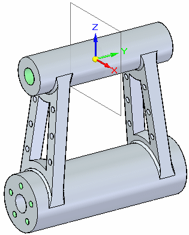
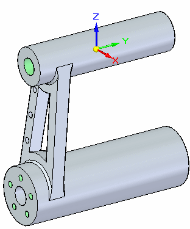
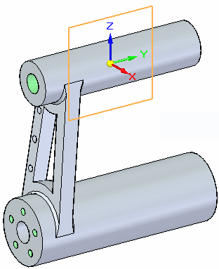
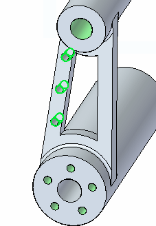
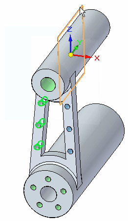
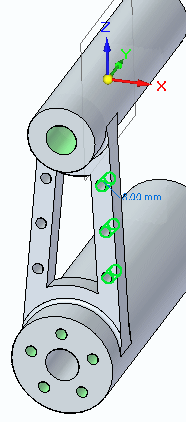
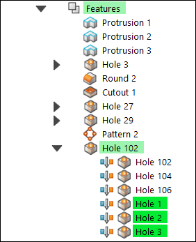
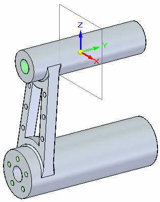
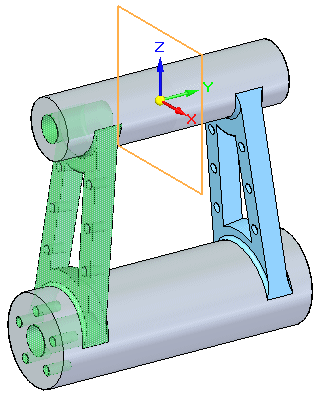
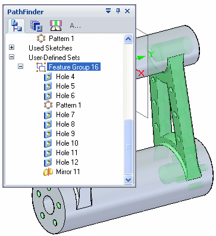

Activity: Mirror faces
This activity demonstrates the method of mirroring faces and features. In this activity you will:
-
Mirror hole features.
-
Mirror other elements such as faces and body features.
Click here to download the activity file.

In this activity, you will mirror holes as well as faces.
-
Open mirror.par.

Show the Right (yz) reference plane.

Select the Hole 102 group.

On the Home tab→Pattern group, choose the Mirror command.

Deselect the Persist  option on the Mirror command bar.
option on the Mirror command bar.
Select the Right base reference plane as the mirror plane.


Notice from Pathfinder that the new hole occurrences are placed into the same hole group as the originals.

Press Escape to finish.
Turn on the Front (xz) reference plane. Turn off all other reference planes.

Select the following elements using PathFinder.
-
Protrusion 3
-
Hole 3
-
Round 2
-
Cutout 1
-
Hole 27
-
Hole 29
-
Pattern 2
-
Hole 102
Choose the Mirror command, using the Front reference plane as the mirror plane.

Deselect the Persist option on the Mirror command bar.
Press Escape to finish.
Note in PathFinder that the mirrored elements organize into a new User-Defined Set.

Save and close the file.
In this activity you learned how to mirror feature(s). Select the feature(s) to be mirrored and then select a mirror plane. If multiple features are selected to mirror, these mirrored features are collected into a user-defined set.
-
Click the Close button in the upper-right corner of this activity window.